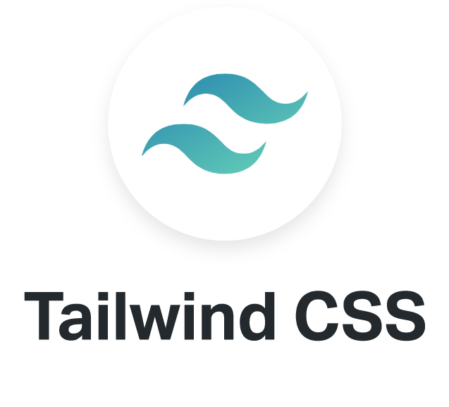
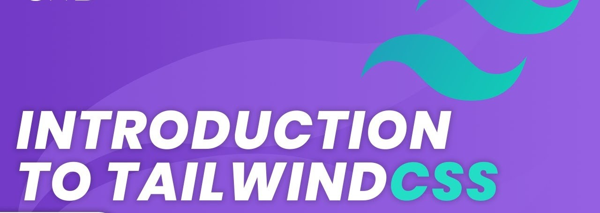
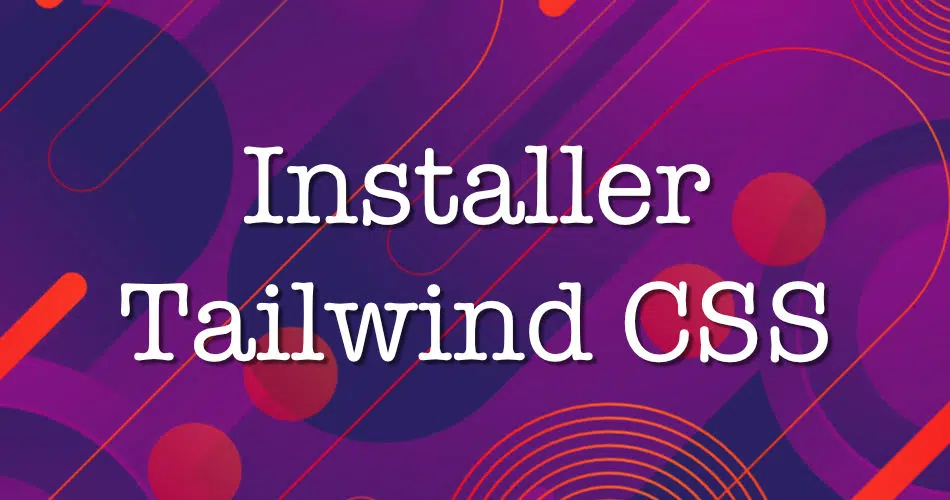
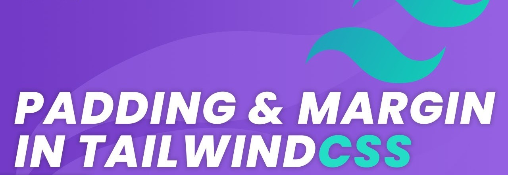
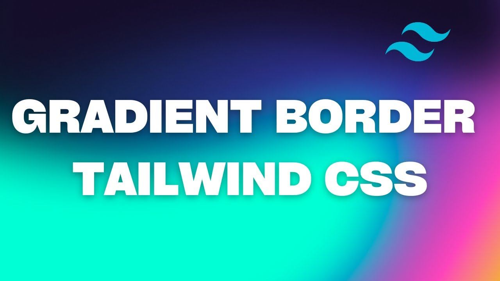
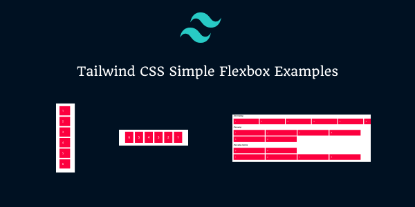

Formation
Au cours de ma formation en Tailwind CSS, j'ai eu l'opportunité d'explorer cette bibliothèque CSS moderne et de
découvrir ses multiples avantages en matière de développement web. Tailwind CSS a enrichi mes compétences en conception
et amélioré mon efficacité dans la création d'interfaces utilisateur réactives et esthétiques. On peut diviser cette
formation en 5 sections

Section 1 : Introduction et Vue d'Ensemble
Au fil de ma formation, j'ai plongé dans un univers captivant de design web moderne. Cette formation a été conçue pour
offrir une compréhension pousser de Tailwind, du processus d'installation à l'application pratique de ses
fonctionnalités.

Section 2 : Installation de Tailwind
La première étape de cette aventure à consister à démystifier l'installation de Tailwind. Avec des instructions claires
et des paramètres de configuration personnalisables, j'ai acquis les compétences nécessaires pour intégrer rapidement et
efficacement Tailwind dans mes projets, libérant ainsi le potentiel de ce Framework.

Section 3 : Les Typographies
Des concepts fondamentaux tels que les marges, les paddings, la taille de la police et l'espacement des lignes ont été
explorés en détail, offrant une vision approfondie de la manière de sculpter le texte pour une présentation visuelle
percutante.

Section 4 : Les Bordures
Là, j'ai maîtrisé les subtilités des rayons de bordure, des diviseurs, des contours, de l'opacité, et des box-shadow

Section 5 : Mise en Page
La conclusion de ma formation a été marquée par L'utilisation de Flexbox pour créer des mises en page dynamiques et
réactives, complétée par une immersion dans les fonctionnalités de Hover, Focus et Actifs.

Revenir en arrière